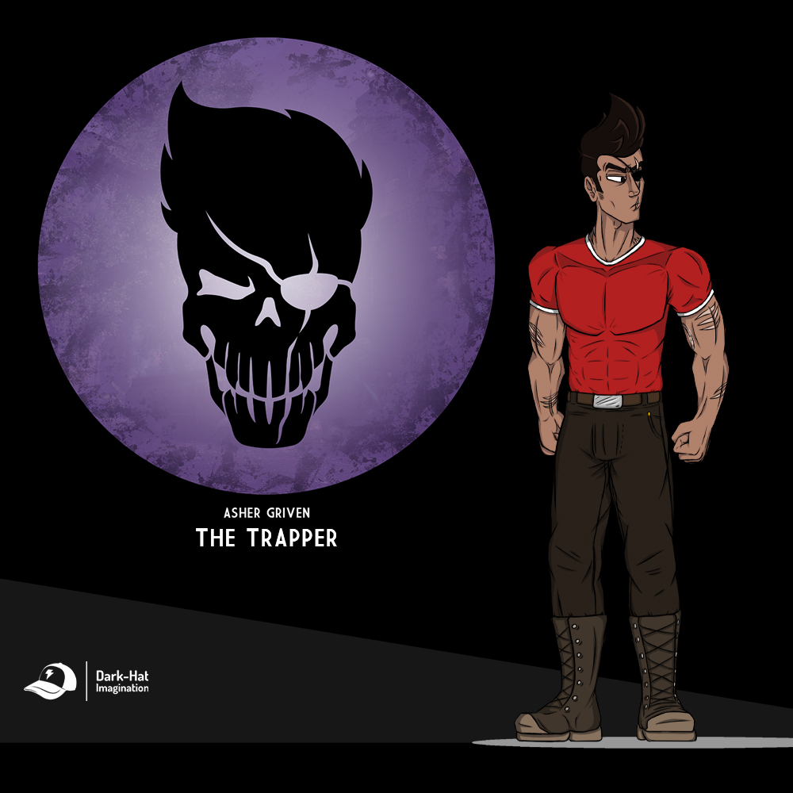

"Con un carácter fuerte y un temperamento que es mejor ni tentarlo". Asher está aquí para erradicar a su objetivo, tanto a distancia media como lucha de cuerpo a cuerpo, las armas melee afiladas son su especialidad, es por ello que tiene su arma favorita, "Thundercracker", una mítica espada embrujada que Asher a conseguido dominar desde hace mucho tiempo. También disfruta de usar "trampas", como las minas explosivas o plataformas de electro shock. Es un experto con revolvers dúales y disfruta de atrapar dinosaurios con su pistola de redes. Edad: 26 años / Género: Masculino / Altura: 1.85 / Procedencia: Latino / Ubicación Actual: Valle de las Tormentas de Arena.
